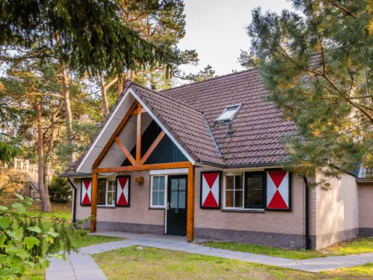
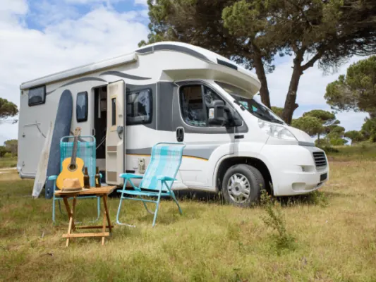
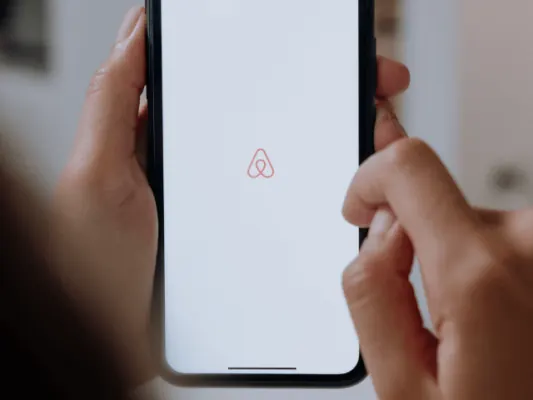
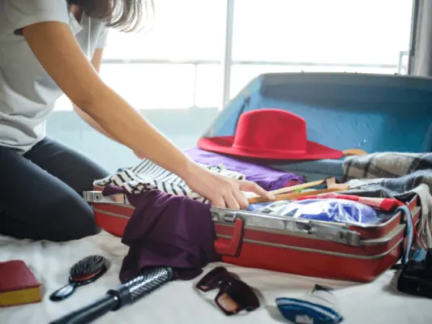
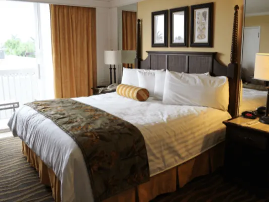
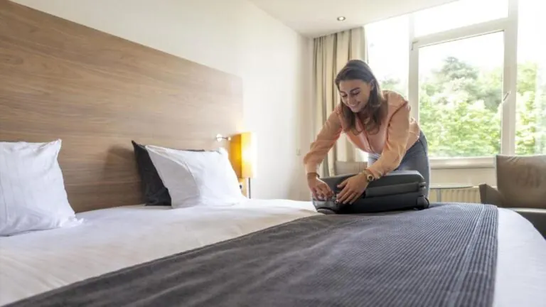
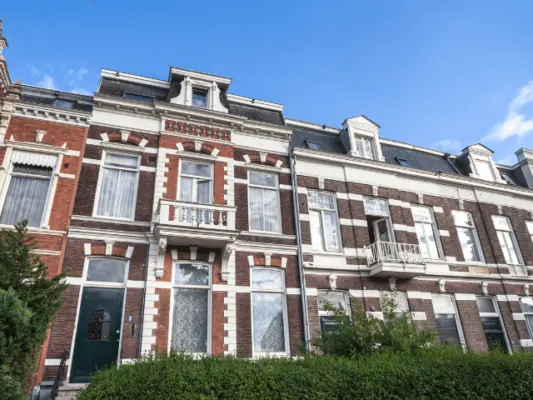
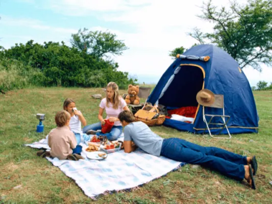

De Leukste Vakantieparken in Nijmegen Vind je Hier
Wil jij er binnenkort in eigen land op uit? Dan dien je Nijmegen absoluut in overweging te nemen als jouw vakantiebestemming. Het is een prachtige stad…
Hotels, B&B's, campings, vakantieparken en camperplaatsen in en rond Nijmegen.

Wil jij er binnenkort in eigen land op uit? Dan dien je Nijmegen absoluut in overweging te nemen als jouw vakantiebestemming. Het is een prachtige stad…

Houd jij van kamperen, maar gaat het slapen in een tent jou toch net een stapje te ver? Dan kun je ervoor kiezen om met de camper uit kamperen te gaan. Op…

Verblijven in een AirBnB is de afgelopen jaren steeds populairder geworden onder vakantiegangers. Of je nu zelf in Nijmegen woont en er even tussenuit…

Kamperen is een favoriete bezigheid van veel Nederlanders. Zowel jong als oud vertoeven jaarlijks met plezier een weekje in hun tent of caravan, terwijl…

Staat een weekendje weg in Nijmegen ook op jouw bucketlist? Dan ben je zeker niet de enige. Veel toeristen vanuit binnen- en buitenland reizen af om het…

Nijmegen is een fantastische stad waar jij absoluut een keer geweest moet zijn. In de bruisende binnenstad van Nijmegen kun je heerlijk winkelen…

Nijmegen Oost is een bruisende woonwijk gelegen tussen de Berg en Dalseweg en de Groesbeekseweg. De Wijk bestaat uit de volgende buurten: Bottendaal…

Ben jij een echte kampeerliefhebber? Kom dan eens kijken in en rondom Nijmegen. Zeker weten dat je daar op één van de vele campings een heerlijk plekje…